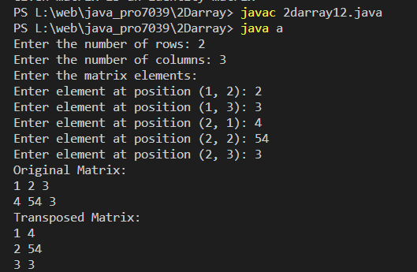

Program to Transpose matrix
Code:-
import java.util.Scanner;
class a {
public static void main(String[] args) {
Scanner scanner = new Scanner(System.in);
// Get the dimensions of the matrix from the user
System.out.print("Enter the number of rows: ");
int rows = scanner.nextInt();
System.out.print("Enter the number of columns: ");
int columns = scanner.nextInt();
// Initialize the matrix
int[][] matrix = new int[rows][columns];
// Get matrix elements from the user
System.out.println("Enter the matrix elements:");
for (int i = 0; i < rows; i++) {
for (int j = 0; j < columns; j++) {
System.out.print("Enter element at position (" + (i + 1) + ", " + (j + 1) + "): ");
matrix[i][j] = scanner.nextInt();
}
}
// Display the original matrix
System.out.println("Original Matrix:");
displayMatrix(matrix);
// Transpose the matrix
int[][] transposedMatrix = transposeMatrix(matrix);
// Display the transposed matrix
System.out.println("Transposed Matrix:");
displayMatrix(transposedMatrix);
scanner.close();
}
private static int[][] transposeMatrix(int[][] matrix) {
int rows = matrix.length;
int columns = matrix[0].length;
int[][] result = new int[columns][rows];
for (int i = 0; i < rows; i++) {
for (int j = 0; j < columns; j++) {
result[j][i] = matrix[i][j];
}
}
return result;
}
private static void displayMatrix(int[][] matrix) {
for (int[] row : matrix) {
for (int element : row) {
System.out.print(element + " ");
}
System.out.println();
}
}
}
Output:-
